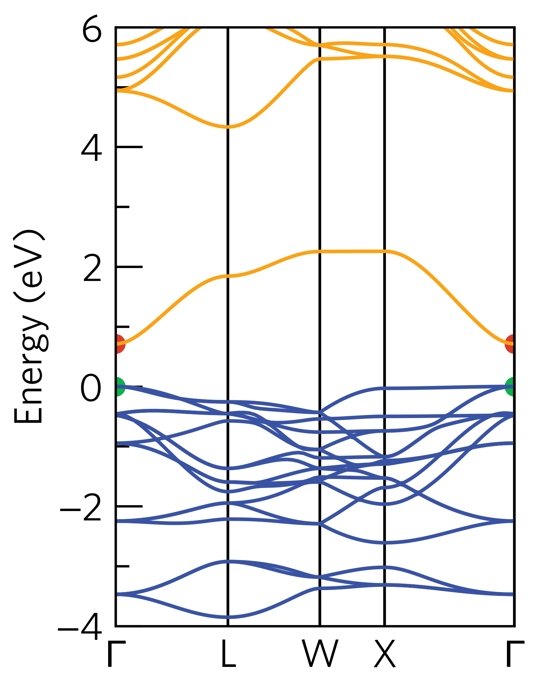

sumo-bandstats¶
sumo-bandstats is a program for extracting band gaps and effective masses
from a band structure calculation.
Usage¶
The full range of options supported by sumo-bandstats are detailed in the Command-Line Interface section,
and be can be accessed using the command:
sumo-bandstats -h
To extract band structure information, simply run the following command in a folder containing
a vasprun.xml or vasprun.xml.gz file, which has been calculated along a high-symmetry path:
sumo-bandstats
For example, if we run this command in the sumo/tests/data/Cs2SnI6/bandstructure directory,
the output should look like:
Direct band gap: 0.712 eV
k-point: [0.00, 0.00, 0.00]
k-point indexes: 0, 113
Band indexes: 34, 37
Valence band maximum:
Energy: 1.444 eV
k-point: [0.00, 0.00, 0.00]
k-point location: \Gamma
k-point indexes: 0, 113
Band indexes: 34, 35, 36
Conduction band minimum:
Energy: 2.155 eV
k-point: [0.00, 0.00, 0.00]
k-point location: \Gamma
k-point indexes: 0, 113
Band indexes: 37
Using parabolic fitting of the band edges
Hole effective masses:
m_h: -0.641 | band 34 | [0.00, 0.00, 0.00] (\Gamma) -> [0.50, 0.50, 0.50] (L)
m_h: -0.516 | band 34 | [0.00, 0.00, 0.00] (\Gamma) -> [0.50, 0.00, 0.50] (X)
m_h: -0.641 | band 35 | [0.00, 0.00, 0.00] (\Gamma) -> [0.50, 0.50, 0.50] (L)
m_h: -0.516 | band 35 | [0.00, 0.00, 0.00] (\Gamma) -> [0.50, 0.00, 0.50] (X)
m_h: -1.234 | band 36 | [0.00, 0.00, 0.00] (\Gamma) -> [0.50, 0.50, 0.50] (L)
m_h: -15.158 | band 36 | [0.00, 0.00, 0.00] (\Gamma) -> [0.50, 0.00, 0.50] (X)
Electron effective masses:
m_e: 0.207 | band 37 | [0.00, 0.00, 0.00] (\Gamma) -> [0.50, 0.50, 0.50] (L)
m_e: 0.211 | band 37 | [0.00, 0.00, 0.00] (\Gamma) -> [0.50, 0.00, 0.50] (X)
The effective masses are given in units of electron rest mass, \(m_0\).
If we compare this output to the band structure:
{kind=link}
We can see that the valence band maximum is composed of three degenerate two-electron bands, whereas the conduction band minimum is composed of a single two-electron band.
The effective masses from \(\Gamma\) to L and from \(\Gamma\) to X are generally small, except for the very flat valence band from \(\Gamma\) to X, which results in masses greater than 15 \(m_0\).
File Searching¶
sumo-bandstats will automatically look for vasprun.xml or vasprun.xml.gz files in the current
directory. If the band structure has been broken up into multiple parts (as is common
for hybrid band structure calculations), these files will be preferentially used. For this to work, the
folders should be named split-0* and sumo-bandstats should be run in the folder containing
the splits. For example, if the file structure is as follows:
bandstructure/
split-01/
KPOINTS
vasprun.xml
split-02/
KPOINTS
vasprun.xml
sumo-bandstats should be run in the bandstructure directory.
Basic Options¶
To specify a particular vasprun.xml to extract information from, the --filenames option
can be used. If multiple vasprun.xml files are provided, they will be combined into a single band
structure.
By default, sumo-bandstats uses parabolic fitting to determine the effective masses. If then
--nonparabolic option is used, then non-parabolic fitting of the band edges will be performed.
sumo-bandstats samples 3 k-points when determining the effective masses. This number can be
controlled using the --sample-points option.
Command-Line Interface¶
bandstats provides information on the band gap and effective masses of semiconductors.
usage: sumo-bandstats [-h] [-f F [F ...]] [-n] [-s N]
Named Arguments¶
- -f, --filenames
one or more vasprun.xml files to plot
- -n, --nonparabolic
use a nonparabolic model to fit the effective masses
Default: True
- -s, --sample-points
number of k-points to sample in fitting
Default: 3
Author: Alex Ganose Version: 1.0 Last updated: March 4, 2018